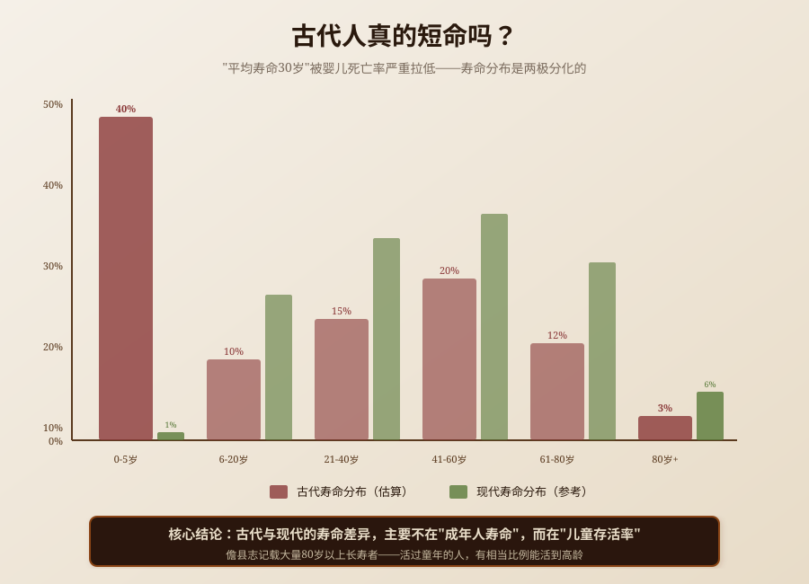

民国年间，《儋县志》卷之十八《耆寿》记载了一个令人惊讶的案例——全新坊村人符贞，寿八十二，妻氏寿八十三。夫妻双双活到80岁以上，在古代被视为"祥瑞"。同一卷中还记载了周肇基寿八十八、何承烈寿八十七、零春村和山春村各有数十位80岁以上长寿者。古代人不是都短命——"平均寿命30岁"被婴儿死亡率严重拉低，活过童年的人有相当比例能活到高龄。本文基于《儋县志》，还原古代长寿现象的真实面貌。
讨论"古代长寿现象"，必须先区分五个层次，避免概念混杂：
| 概念 | 性质 | 说明 | 本文是否讨论 |
|---|---|---|---|
| 平均寿命 | 统计指标 | 全部人口的平均死亡年龄 | 是，作为背景概念 |
| 预期寿命 | 统计指标 | 出生时的预期寿命 | 是，作为背景概念 |
| 耆寿 | 地方志类目 | 地方志中记载长寿者的专门类目 | 是，核心讨论对象 |
| 长寿者 | 人物群体 | 活到高龄（通常80岁以上）的人 | 是，核心讨论对象 |
| 长寿秘诀 | 养生观念 | 古人认为的长寿原因 | 是，作为分析对象 |
本文讨论儋县志"耆寿"专目中记载的长寿者案例、古代寿命分布的真实形态（婴儿死亡率拉低平均数 vs 活过童年者能活到高龄）、地方志设"耆寿"专目的制度背景、长寿者的社会功能，以及对"古代人短命"这一常见误解的纠正。
"耆寿"作为地方志的专门类目，有悠久的历史传统。中国古代有"尚齿"（尊重老年人）的传统，《礼记》记载"五十养于乡，六十养于国，七十养于学"，说明古代对老年人有特殊的尊重和赡养制度。
地方志设"耆寿"专目，始于宋代，成熟于明清。明清时期的地方志普遍设有"耆寿""寿考""人物·寿考"等类目，记载邑中长寿者的姓名、年龄、事迹。这既是"尚齿"传统的延续，也是地方官"教化"的需要——通过记载长寿者，展示地方的"人瑞"和"盛世气象"。
本文所见材料来自《儋县志》（民国）卷之十八《耆寿》。儋州（今海南省儋州市）在明清时期属广东管辖，是岭南地区的重要州份。儋县志设"耆寿"专目，记载了邑中大量80岁以上的长寿者，包括具体的姓名、村庄、年龄、配偶年龄、事迹等，是研究古代长寿现象的珍贵史料。
需要特别说明的是，本文记录的是旧志中记载的长寿者案例，不是对古代寿命的全面统计。地方志的"耆寿"专目有选择性——只记载长寿者，不记载短命者，因此不能用"耆寿"专目中的长寿者来推断古代人的平均寿命。本文的核心问题是"古代人的寿命分布是什么样的"，而不是"古代人平均寿命是多少"。
根据《儋县志》卷之十八《耆寿》的记载，儋州有大量80岁以上的长寿者。以下是部分案例：
夫妻同寿是"耆寿"专目中常见的记载方式——不仅记载丈夫的寿命，也记载妻子的寿命。这说明在古代，夫妻双双活到高龄是被视为"祥瑞"的现象，值得特别记载。
符贞寿八十二、妻八十三；曾省忠寿八十四、配羊氏八十五——这两对夫妻都活到了80岁以上，而且妻子的寿命比丈夫还长。这说明在古代，女性的寿命不一定比男性短——在活过童年的前提下，女性的寿命可能与男性相当甚至更长。
周肇基寿八十八，是记载中寿命最长的之一。他"性好诗书，心存贞洁"，说明他是有文化修养的人。"授冠带"说明他因为高寿而获得了政府的荣誉——冠带（帽子和腰带）是古代的荣誉服饰，授予高寿者是一种"旌表"。
何承烈寿八十七、许靖邦寿八十五、许孟伦寿八十五、许陈保寿八十六——这些都是85岁以上的高寿者，在古代是非常罕见的。
零春村和山春村都有大量80岁以上的长寿者——零春村至少有7位，山春村至少有10位。这说明在古代，某些村庄可能有"长寿村"的现象——特定村庄的人普遍长寿。
"长寿村"的形成可能与以下因素有关：
但需要注意的是，地方志的记载可能有选择性——某些村庄因为出了长寿者而被特别记载，其他村庄的长寿者可能没有被记载。因此，不能简单地得出"零春村和山春村是长寿村"的结论，只能说"这两个村庄在地方志中记载了较多的长寿者"。
从儋县志的记载看，长寿者有以下特征：
"古代人平均寿命只有30多岁"是一个常见的说法，但这个数字严重误导了人们对古代寿命的理解。古代人的寿命分布不是"所有人都短命"，而是"两极分化"：
古代的婴儿死亡率（1岁以下死亡）和儿童死亡率（5岁以下死亡）极高。主要原因包括：
据估计，古代的婴儿死亡率可能在20%-30%之间，5岁以下儿童死亡率可能在30%-50%之间。这意味着有三分之一到一半的儿童在5岁之前死亡。
但是，一旦活过了童年（5岁以上），古代人的预期寿命会大幅提高。据估计，古代活过20岁的人，预期寿命可能在50-60岁之间；活过40岁的人，预期寿命可能在60-70岁之间。
儋县志中记载的大量80岁以上长寿者，就是这种寿命分布的证据——虽然婴儿死亡率极高，但活过童年的人有相当比例能活到高龄。80岁以上的长寿者虽然罕见（可能只占总人口的1%-2%），但并非不存在。
"古代人平均寿命只有30多岁"这个数字是真实的，但它被婴儿死亡率严重拉低了。如果一个社会有50%的儿童在5岁之前死亡（平均死亡年龄约2岁），另外50%的人活到70岁，那么平均寿命就是（50%×2 + 50%×70）= 36岁。但这并不意味着"所有人都在36岁左右死亡"——实际上，一半的人在2岁左右死亡，另一半的人活到70岁。
因此，用"平均寿命"来描述古代人的寿命是严重误导的。更准确的描述应该是："古代人的寿命分布是两极分化的——婴儿死亡率极高，活过童年的人有相当比例能活到高龄。"
现代社会的婴儿死亡率极低（不到1%），因此平均寿命主要反映的是成年人的寿命。现代中国人的平均寿命约77岁，这意味着大多数人能活到70岁以上。
古代与现代的寿命差异，主要不在于"成年人的寿命"（古代活过童年的人也能活到60-70岁），而在于"儿童的存活率"（现代儿童几乎都能活过童年，古代有三分之一到一半的儿童在5岁之前死亡）。
因此，现代医学的最大贡献不是"延长了成年人的寿命"，而是"大幅降低了儿童死亡率"，让更多的人能够活过童年，享受成年后的生活。
地方志设"耆寿"专目，不是简单的"记录长寿者"，而是有深刻的制度背景：
中国古代有"尚齿"（尊重老年人）的传统。《礼记》记载"五十养于乡，六十养于国，七十养于学"，说明古代对老年人有特殊的尊重和赡养制度。"尚齿"是儒家"孝悌"观念的延伸——尊重老年人是"孝"的社会化表现。
地方志设"耆寿"专目，是"尚齿"传统在地方志编纂中的体现——通过记载长寿者，表达对老年人的尊重，传承"尚齿"的文化传统。
在古代，长寿者被视为"人瑞"（人间的祥瑞），是"盛世气象"的标志。地方官记载长寿者，是为了展示自己治理有方——"我治理的地方出了这么多长寿者，说明我治理得好，地方太平，人民安居乐业。"
因此，地方志设"耆寿"专目，也是地方官的"政绩展示"——通过记载长寿者，展示地方的"盛世气象"，为自己的政绩加分。
明清时期有"旌表"制度——政府对节妇、孝子、长寿者等进行表彰，赐匾额、建牌坊、免差役。地方志设"耆寿"专目，是"旌表"制度的记录——记载获得旌表的长寿者，以及他们的事迹。
周肇基"寿八十八，授冠带"，就是"旌表"制度的具体表现——因为高寿而获得政府的荣誉（冠带）。地方志记载这个案例，既是记录"旌表"制度的执行，也是为了激励其他人。
地方志设"耆寿"专目，也是构建地方认同的一种方式——"我们这个地方出了这么多长寿者，说明我们这个地方人杰地灵，风水好，民风淳朴。"通过记载长寿者，增强地方居民的自豪感和认同感。
古代长寿现象的核心价值，在于它提醒我们要用"寿命分布"而不是"平均寿命"来理解人口的寿命状况。"平均寿命"是一个单一的数字，它掩盖了人口内部的寿命差异——婴儿死亡率、成年人寿命、高龄者比例等。只有理解了"寿命分布"，才能真正理解一个社会的健康状况和医疗水平。
这种"分布思维"对今天的公共卫生和健康政策也有启示：
从更深层看，古代长寿现象也提醒我们：在评价历史时，不能简单地用现代的标准去评判，而应该回到历史语境中，理解历史的复杂性。"古代人平均寿命只有30多岁"是一个真实的统计数字，但它不能代表古代所有人的寿命状况。古代既有大量夭折的儿童，也有活到80岁以上的长寿者。只有理解了这种"两极分化"的寿命分布，才能真正理解古代社会的健康状况和人民生活。
同时，儋县志中"夫妻同寿"（符贞寿八十二、妻八十三；曾省忠寿八十四、配羊氏八十五）的案例也提醒我们：家庭环境对寿命有重要影响。夫妻双双长寿，说明他们的生活方式、饮食习惯、心理状态可能都有利于健康。这对今天的家庭健康也有启示——营造健康的家庭环境（健康饮食、适量运动、良好的心理状态），有利于全家人的健康和长寿。
---

是的，古代人的平均寿命确实只有30多岁（据估计，中国古代的平均寿命在30-40岁之间）。但这个数字被婴儿死亡率严重拉低了——古代有三分之一到一半的儿童在5岁之前死亡，这些早夭的儿童拉低了平均寿命。实际上，古代人的寿命分布是两极分化的：婴儿死亡率极高，但活过童年的人有相当比例能活到高龄（60-70岁，甚至80岁以上）。儋县志中记载的大量80岁以上长寿者（符贞寿八十二、周肇基寿八十八、何承烈寿八十七等）就是证据。因此，"古代人平均寿命只有30多岁"不等于"古代人都在30多岁死亡"。
"耆寿"是地方志中的一个专门类目，用于记载邑中长寿者的姓名、年龄、事迹。"耆"是老年人的意思（六十曰耆），"寿"是长寿的意思，"耆寿"即"老年人中的长寿者"。地方志设"耆寿"专目，始于宋代，成熟于明清，是中国古代"尚齿"（尊重老年人）传统的体现。明清时期的地方志普遍设有"耆寿""寿考""人物·寿考"等类目，记载邑中80岁以上的长寿者。本文所见材料来自《儋县志》（民国）卷之十八《耆寿》，记载了儋州大量80岁以上的长寿者。
根据《儋县志》卷之十八《耆寿》的记载，儋州有大量80岁以上的长寿者，部分案例包括：符贞（全新坊村人，寿八十二，妻氏寿八十三）、周肇基（周坊人，性好诗书，心存贞洁，寿八十八，授冠带）、羊廷珍（林兰人，寿八十）、会绪扬（水井人，寿八十二）、许经邦（零春人，寿八十三）、何元辉（零春人，寿八十一）、许靖邦（零春人，寿八十五）、何承烈（山春人，寿八十七）、许陈保（山春人，寿八十六）、曾省忠（山春人，寿八十四，配羊氏寿八十五）等。这些长寿者大多在80-89岁之间，周肇基寿八十八是记载中最长的之一。
古代的长寿者虽然占总人口的比例不高（可能只有1%-2%），但并非不存在。原因包括：一是活过童年的人预期寿命较高——一旦活过了儿童期（5岁以上），避开了最危险的传染病和营养不良期，预期寿命会大幅提高到50-60岁，部分人能活到80岁以上；二是遗传因素——长寿有一定的遗传性，某些家族可能有长寿基因；三是环境因素——某些村庄的自然环境（水质、空气、气候）可能有利于长寿（儋县志中零春村和山春村都有大量长寿者）；四是生活方式——有规律的劳动、健康的饮食、良好的心理状态可能有利于长寿（周肇基"性好诗书，心存贞洁"）。
古代长寿者和现代长寿者的主要区别在于"比例"和"确定性"：一是比例不同——古代80岁以上的长寿者只占总人口的1%-2%，现代80岁以上的长寿者占总人口的比例已经超过10%（中国80岁以上人口超过3500万）；二是确定性不同——古代能否活到高龄很大程度上取决于运气（是否感染传染病、是否遭遇战乱和饥荒），现代活到高龄的确定性大大提高（疫苗、抗生素、公共卫生体系大幅降低了传染病和感染的风险）；三是健康状况不同——古代的长寿者可能身体状况较差（慢性病、失能），现代的长寿者健康状况普遍较好（医疗条件改善，慢性病可以控制）。但无论是古代还是现代，长寿都与遗传、环境、生活方式等因素有关，这一点是相同的。